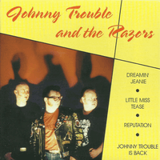

Johnny Trouble and the Razors - Johnny Trouble And The Razors (EP, 2003)
01 - Dreamin' Jeanie (2:49)
02 - Little Miss Tease (2:01)
03 - Reputation (2:20)
04 - Johnny Trouble Is Back (1:48)
© Goofin' Records :: [GRS 604]
Notes
Finland.
Ari Utriainen (Ude) - Bass
Mikko Rintasaari (Mikko) - Drums
Miku Majuri (Ellis) - Guitar, Vocals
Photography by Jonna Majuri
Manufactured by CD-Linja OY
All songs are credited to Johnny Trouble, but one "Reputation" is credited to Kim Fowley/Steve O'Riley
Produced by Miku Majuri
reference information: Discogs®
Review
013/366 (Project 366)
Tuny rockabilly that is more close to so called soft Rockabilly Revival rather than to wild Teddy Boy Rock'N'Roll. Line-up is fully inspired by Teds and there is a certain sweetness of such sound, but diversity of songs and highly shade of fifties rockabilly make their sound a bit more traditional. What is can be Rockabilly Revival and around general old fashioned Rock'n'Roll.
The three tracks on this EP are self-penned songs. And to be honest, they were my favorites and I regarded them as killer hits! Especially "Little Miss Tease" and "Johnny Trouble Is Back", but "Dreamin' Jeanie" is so good too. The cover version of "Reputation" song is also well-done though. I have always enjoyed listening to these recordings. And it still sounds good to me. I like the mood that appears while listening to songs. And I like the somewhat hackneyed tune of "Johnny Trouble Is Back" - so easy, so great. A sound that is definitely recognizable, quite melodious and deft tone. Rockabilly with somewhat UK way of rockin' and rollin.
Johnny Trouble and the Razors recorded a good EP, not insane or crazy but stylish. Slightly raw Rockabilly and with tasty sound of rockin' Teds, authentic influences and roughness of Rockers. Full of revival mood. Only four songs, but which are really worthy of attention.